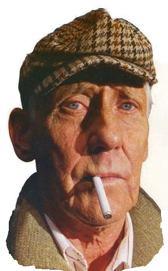
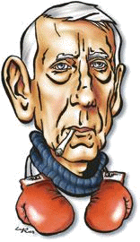
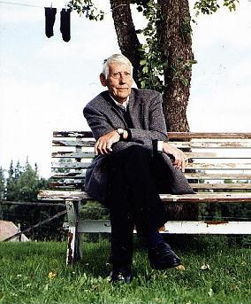

Södermalm i tid och rum. Stockholm
Ur Relief. Författarporträtt av Crister Enander, 1995 Stig Claesson Svart alsfalt, grönt gräs Döden heter Konrad
|
 |
- Vad fan vill du mig?! Det är det första han säger när vi tigande gått uppför trappan och klivit in i röran på ateljén. Han gör sig inte till. Det är inget koketteri som får honom att skälla som en bandhund. Han vill inte bli intervjuad. Ute i trapphuset håller de på att måla om och redan det smutsbruna skyddspapperet som täcker golven och trappan prasslade illavarslande när vi tog oss upp till andra våningen där ateljén ligger. Tyst och sammanbitet tog han två breda trappsteg i taget. I handen bar han ett slitet lexikon. Han småpratar inte. Detta är en man som inte ägnar sig åt att konversera. Allra minst i en stad som blivit alltmer förryckt och tömd på den äkthet och öppenhet som måhända en gång fanns där. Stockholm är en stad han känner väl. Bättre än de flesta. Detta är hans stad, och djupt inom sig är han dömd till att alltid bära den med sig, vad han sedan än må tycka om den. Där är han född, uppvuxen och där har han rört sig bland och träffat alla de människor som blivit ett med det vi tycker är Stockholm. Under senare tid är det ändå som han börjat vända ryggen till, vänt sig bort från den stad som åtminstone skenbart inte längre tycks vara hans. Det är på Södermalm han numera framlever sitt liv. Cirklarna har genom åren blivit snävare. Det vill säga, när han inte flyr staden med skrivmaskinen under armen för att i ensamhet sätta sig i sin småländska |
Genom decennierna har denna rastlöshet också fört honom långväga omkring. Här på Söder känner han sig nog trots allt som hemma. Rötterna är djupa och lärospånen många. Han har insett att det väsentligaste för att dagligdags förmå uthärda är att hitta sina egna vattenhål, vilopunkter i vardagsvärlden och att väl vårda de få vänskaper han har kvar.
Han dricker sitt morgonkaffe hos ramhandlaren borta i hörnet. Där kliver han in om morgnarna och slår sig ner redan innan klockorna hunnit slå sju. Runt dem vaknar sakta staden. De säger inte mycket. Det behövs inte. I stillhet dricker de sitt kaffe. Efter en stund reser han sig upp från den lite halvrangliga stolen för att gå över till den gamla skolan vid Nytorget och upp till sin ateljé.
"Den skolsal jag arbetar i och kallar min ateljé", skriver han i "Eko av en vår", "är mig en mycket kär arbetsplats. Jag går dit varje morgon med bestämda steg som hade jag en stämpelklocka att redovisa min ankomst för. Och det har jag kanske. Jag skulle skämmas om jag en morgon ansåg mig behöva sova några timmar extra, sägande mig att jag i alla fall inte hade nånting särskilt brådskande att utföra."
Detta är en man med stark integritet. Han har sett det mesta och hört ännu mer, säkert alldeles för mycket. Likväl har han till skillnad från många av alla de andra författarna och skribenterna och konstnärerna som korsat hans väg förmått bevara sin kärna intakt. Den har inte gått förlorad i en värld av såväl storvulna och himlastormande drömmar som den hårdaste och mest krassa verklighet.
Hemligheterna han bär på är många, kanske också tunga att leva med. Det är svårt att säga. Det är omöjligt för någon annan att veta. Ändå vet vi en del. Vi vet nog mer än han egentligen vill att vi ska veta. Mycket har han släppt ifrån sig. Böckerna, berättelserna och artiklarna har sedan debuten för snart femtio år sedan hunnit bli metertjockt långa fram till den senaste romanen "Eko av en vår".
Ty väl framför skrivmaskinen, när han sitter där vid arbetsbordet och papperet i valsen varit tomt tillräckligt länge, så dröjer det inte förrän orden börjar sjunga. Plötsligt släpper han lös det han tidigare sluten som en envis mussla burit på för sig själv. Då delar han med sig av hemligheterna och de insikter han vunnit under ett rikt och ofta hårt liv.
Han är en man med livserfarenhet. Och det är sannerligen inget falskt djupsinne han erbjuder sina läsare. Det är rakt igenom äkta vara. När det benådade och befriande knattret från hans skrivmaskin tar vid och för ett tag lyckas driva den djävulska ledan framför sig, är ärlighet och uppriktighet en hederssak. Han är en stolt man som bär sitt huvud högt, rakryggat därtill och med en sällsynt självklarhet.
I många avseenden är han den siste av sitt slag.
Han har lärt sig att bli vän med den ofta grymma tystnaden. Jag syftar inte på den tystnad som ljuder högt och tydligt när TV-apparaten eller CD:n stängs av. Inte heller den vi möter när vi någon gång sätter oss ner i en skogsglänta och medvetet väntar och lyssnar med spetsade öron.
Tystnaden det här handlar om är den som välver sig runt oss likt ett ständigt expanderande klot och som bara fortsätter att växa och växa vad vi än gör för att skingra dess makt. Den tystnad som finns i ensamheten och som vi möter i de mörkaste av nätter; den som bär på kunskapen om vår egen väntande död. Med den tystnaden är denne man närapå tryggare än bland levande människor. Han känner den väl. Om och om igen har han stirrat in i dess djupa hål. Det är därför en omöjlighet att föreställa sig att han överhuvudtaget skulle ägna sig åt tomt prat. "Jag konverserar inte frivilligt", skriver han i "Män i min ålder". Det är inte svårt att ta honom på orden. Butter, ilsken och vrång bligar han misstänksamt mot mig över bordet där den lilla reseskrivmaskinen står bland högar av papper. Hårt biter han ihop tänderna. Ansiktet stelnar, blir till en mask att gömma sig bakom. Men runt käkarna vitnar huden och börjar snart skifta över åt rött och mörkaste blått. Det här är allvar. Han är skitförbannad.
Här börjar alltså en intervju, tänker jag för mig själv. Gud vet hur den ska sluta.
Länge står vi där på varsin sida av skrivbordet och stirrar på varandra. Minut läggs till minut. Han släpper inte för en sekund ögonkontakten. De blå ögonens kraft och ilska naglar fast mig. De svarta pupillerna blir små och vassa. Han rör sig inte, bara armarna svänger i luften, men mycket stilla och sakta. Han står där som vore han beredd att hugga till. Tiden har stannat, upphört att existera. Det är tyst och allt som nyss fanns runt omkring oss tycks nu avlägset och främmande. Vad är det som håller på att hända där i rummet?
Detta är nu inget nytt. In i minsta nyans känner jag igen vad som håller på att ske. Så här har jag stått förr. Jag blir alldeles kall inombords, beräknande och samtidigt kristallklar i hjärnan. Smaken som springer upp i munnen är svagt bittersöt. Den sticker till och jag vet vad den betyder. Jag är beredd. Detta är de viktiga och oftast avgörande sekunderna innan det brakar loss. Förr brukade jag försöka klappa till först. Det kan jag knappast göra i det här fallet. Hur fan skulle det se ut? tänker jag för mig själv under tiden som jag börjar överväga om mannen framför mig egentligen bara vill testa mig - eller måhända sig själv. Säker är jag inte. Kan heller inte vara. Min kropp sänder tydliga signaler. Jag får inte slappna av. Allvaret finns där, även om jag inte alldeles klart kan tyda det. Jag vet inte vad han som står där framför mig kommer att göra. Kan inte förutse nästa steg.
Mannens mycket ljusa ögon mörknar, svärtan drar ett brett penseldrag över dem. Knytnävsslagen hänger i luften. Båda är vi spänt på vår vakt, utan att ansiktena med en min tillåts avslöja vad vi tänker. Detta är roller vi bägge behärskar och väl känner igen; en ritual vars mönster vi har nerlagda djupt i ryggmärgen. Det är ett arv vi givits. Luften tätnar, blir liksom lite tyngre och mer krävande att få ner i lungorna. När som helst kan slagsmålet braka loss. Ingen av oss har längre ensam kontroll över situationen. Luften står orörlig i rummet.
Sakta sätter jag ner väskan på golvet, vill ha bägge händerna fria. Jag gör det utan att för en sekund flacka undan med blicken. Jag håller med mina ögon fast hans ögon. Det är de som kommer att tala om för mig om och vad och i så fall när han tänker göra något. Jag vet inte hur länge vi står där, fastlåsta i varandra. Ögonblicket sväller och spricker i tystnaden. Sedan är det plötsligt över. Hotet tonar bort. Något handgemäng lär det inte bli. Den elektriska laddningen omkring oss börjar försvinna. Hade det funnits en hund i rummet hade den gnällt nu. Det är vad djur oftast gör när ovädret dragit förbi. Själv är jag fortfarande på min vakt, släpper honom inte ur sikte. I ögonvrån ser jag ett par stolar. Jag sätter mig inte.
Det är mycket tyst. Avlägset hörs en bil, i fönstret som står öppet inåt gården rör sig gardinen svagt viskande. Jag väntar. Jag säger inget. Han tar upp ett tillknycklat cigarettpaket. Han tänder en cigarett och suger girigt ner röken i lungorna.
- Du får röka här! ryter han till mig.
|
Också jag tänder försiktigt en cigarett. Ännu släpper jag honom inte med blicken.
Där står vi och röker. Vi säger inget. Tystnaden är nu behagligare; liksom mer inbjudande. Kroppen slappnar av, anspänningen börjar släppa. Han plockar lite i pappershögarna. Han fimpar i ett stort askfat och tänder snart en ny cigarett. Jag går runt i rummet, tittar mig omkring. Tyst ser jag på målningarna som om jag gick ensam i den gamla skolsalen.
Detta är en man som det är lätt att vara tyst tillsammans med. Han kan tiga. Han kan leva med den viktiga tystnaden utan att kravfullt vända sig mot omgivningen. Han tiger som svenskar gjort i alla tider, ända fram till något nyligen och för gott gick sönder i vårt vardagliga liv. De som kan konsten att tiga är numera få. De är mycket få. De är en sällsynt art. En utrotningshotad sådan misstänker jag, i dessa tider då människor nästan småsvettas nervöst bara någon gör en eftertänksam konstpaus i ett samtal. Tiden som är vår är en tid av oroligt pladder. "Många kritiker har länge menat att jag är en mycket svensk författare som skriver om vårt land för landsmän", skriver denna man om sig själv i ett brev. "Som person däremot tycks jag vara |
 |
Mannen som nu står vid fönstret och läser ett papper han just plockat upp från skrivbordet är en otidsenlig man. Han passar inte in. Hans väg har varit lång. Många är de mil han har lagt bakom sig. Många är de han har framför sig. Han vet att han kommer att gå dem. Han ger sig inte.
Det är också en mycket envis man som står där vid fönstret. Ansiktet är svagt fårat. Ögonen är vackra, blått i blått som vore de av is. De är allt annat än kalla. De utstrålar i stället en väntande värme. Men de har sett för mycket. Det märks trots allt.
Till slut tvingas jag bryta tystnaden och säger något om intervjun. Då svär han och ber mig dra dit man ska dra när ens tid är mogen. Jag känner hur tröttheten väller upp inom mig. Natten har varit lång och visst är jag trött. Men i kroppen pumpar adrenalinet fortfarande runt; dunkande och manande. Tankarna blir smått grumliga i kanterna, blir lite oskarpa efter anspänningen. Och i just det ögonblicket skiter jag i det mesta. Jag bryr mig inte om vilka konsekvenser mitt beteende leder till. Ännu är jag inte helt fri; ännu sitter jag till hälften fast i den obevekliga ritualens mönster. Så lätt skakar man sig inte loss ur aggressivitetens hårt knutna nervtrådar. Men jag lyssnar och förmår trots allt hålla truten stängd.
Han fortsätter buttert och tvärilsket att förklara att jag inte har där och göra. Ännu en gång ber han mig fara åt helvete. Säger att jag ska lämna honom i fred. Kanske har han rätt. Kanske borde jag böja mig ner, ta väskan i näven och gå ut genom dörren. Jag kunde alltid smälla igen den gamla gistna trädörren så att de sista flagorna färg rasade ner från väggen. Återigen känner jag hur det börjar rinna till i sinnet.
Jag ser mig runt för att lugna ner mig. Rummet är stort och det är högt till tak; det finns rymd i rummet och gott om plats för tankar. Väggarna har en gång varit vita. Golvet kan med lite god vilja kallas blått. Här härskar ett hälsosamt kaos, fast det skulle inte förvåna mig om han - som den ursvensk han är - försökt plocka undan lite eftersom han visste att han skulle få besök.
Vid en första hastig blick tycks konstnären husera i ena halvan, där staffliet står och färgtuber och papperstrasor ligger på ett bord, och i den andra halvan härskar författaren i ensamt majestät vid sitt skrivbord. Bägge heter de Stig Claesson, fast i folkmun kallas han "Slas", en gammal pseudonym som fått eget liv och för evigt bitit sig fast. Stig säger de som känner honom. Och även om aldrig någon skulle få det för sig borde han enligt vad som förr kallades konvenans tituleras Doktor Claesson. Redan år 1974 blev han filosofie hedersdoktor vid Uppsala universitet.
Mellan skrivbordet och staffliet finns ett runt soffbord och några fåtöljer. Fortfarande står han upp. Mellan oss har vi skrivbordet. Han kastar en blick ut på gatan och ser ut som om han försöker fatta någon form av beslut. Med hög röst börjar han ryta.
- Jag har ingenting att säga! Du kan väl för tusan hitta på något själv och skriva det i stället. Har du ingen fantasi? Va! Jag vet inte vad jag ska säga till dig. Vad har du här att göra? Vad fan är det du vill mig!? Det är en varm eftermiddag och ändå stiger kallsvetten plötsligt upp i nacken. Jag känner hur ilskan återigen börjar sjuda i mig. Den och tröttheten gör så att jag snart står där och ryter tillbaka. Nu ger jag igen med samma mynt. Med hög röst säger jag att du har för fan själv sagt ja till intervjun.
- Jag har för helvete rest sextio mil för att träffa dig, fräser jag och ser samtidigt hur ett något spefullt leende snabbt drar förbi över mannens ögon.
Ingen kan påstå att jag inte är förvarnad. Det är jag till övermåttan. "Claesson ger inga intervjuer, men du kan ju alltid försöka." "Det är ingen ide!" "Det går inte. Han vägrar." Men Stig Claesson har faktiskt sagt ja.
Vi skulle - på hans uttryckliga begäran - träffas tjugo över fem. Inte fem; inte vid femsnåret. Nej, sjutton och tjugo, var det sagt.
När jag kom stod ateljéfönsterna in mot gården vidöppna som för storvädring. Jag gick upp och knackade på. Ingen öppnade. Då trodde jag att alla de kraxande olyckskorparna skulle få rätt.
Det är heller ingen hemlighet i kulturvärlden uti huvudstaden, där alla nogsamt och illasinnat håller reda på varandra och tisslandet och skvallrandet tycks utgöra själva livsluften, att Claesson i likhet med så många andra författare och konstnärer har problem med spriten. Den nyckfullhet och blinda grymhet som djävulen i flaskan äger är stor och hänsynslös. När som helst lyckas den att blott alltför övertygande viska fram sitt förrädiska budskap - drick! drick!- och plötsligt krossas vardagen till ett osammanhängande töcken som uteslutande styrs och behärskas av en enda stor drivkraft: Mer att dricka! Det måste finnas mer att dricka, om inte här så någon annanstans! Kanske har Claesson gått under medvetandets yta och försvunnit ut på en blodig krogrunda?
Men icke! Exakt nitton minuter över fem, när jag sitter på stentrappan utanför och njuter av septembersolen, kommer en välklädd man släntrande över den gamla skolgården. Det första man omedelbart lägger märke till är hans sätt att gå. Därefter klädseln, vilken är snygg och ytterst elegant. Han är iförd en välskuren och modern kostym. Men han rör sig som en höjdhoppare. Benen pendlar oberört, lite slängigt och med ett smidigt ryck kommer sedan kroppens överdel efter.
Benen pendlar till igen och därefter ytterligare en ny knyck med kroppen. Nästan varje morgon, mellan klockan åtta och nio, träningsboxar han i Hammarbys lokaler. Det är en man i god form. Han är vältränad och rör sig också med en idrottsmans självklara säkerhet. Där kommer Stig Claesson, tänker jag. Hela svenska folkets älskade "Slas". Det är tveklöst en man med många bottnar. Självsäker utåt, djupt tvivlande och skeptiskt ifrågasättande inåt. Redan på avstånd utstrålar han en ganska kall och stor distans till omvärlden, som var han omsluten eller kanske instängd av sina egna plågor och tankar. En stor och mörk ensamhet, nära besläktad med sorg och av svärta färgat tungsinne, omger Stig Claesson.
- Om mig kan du skriva vad fan som helst! Använd din fantasi, säger han ännu en gång när vi äntligen har satt oss ner och jag plockat fram block och penna.
- Jag går ju här ensam hela dagarna. Då kan man ju tänka ut någonting, komma på både det ena och andra. Men när någon sedan kommer och frågar kan jag inte svara. Att det är så lärde man ju sig redan som ung grabb i plugget. Det är dumt att svara på frågor. Det vet alla med lite vett i skallen.
- Är man intresserad av böcker eller bilder så kan jag förstå intresset för slutprodukten, för boken eller teckningen eller tavlan. Men vägen dit, hur det hela kommit till, den går inte att beskriva. Det är omöjligt. Den bara är, och jag kan inte fatta varför detta skulle kunna intressera någon annan än mig själv.
"De konstverk jag lämnar ifrån mig får klara sig själva. Alldeles ensamma", skriver Stig Claesson i "Eko av en vår". Detta bör inte tolkas som en form av konstnärens spel för galleriet. Han har faktiskt svårt att ens komma ihåg titlarna på de böcker han skrivit, än mindre vad de handlar om. Gjort är gjort. Det är vägen framåt som han ser, sin egen väg. Den han måste gå.
- Skillnaden mellan mig och andra författare som du har intervjuat, säger Claesson efter att med en smått aggressiv envishet ha frågat ut mig om vad jag håller på med och vilka andra jag har intervjuat. Under tiden har vi flyttat över till varsin fåtölj och fortsatt att röka ikapp. Nu har han också nästan slutat fräsa och skälla. En antydan till nyfikenhet och undran skymtar i stället fram. När han väl börjar berätta och prata uppslukas både den som lyssnar och han själv. Osäkerhetens vasst utåtvända taggar har dragits in.
- Jo, skillnaden mellan mig och andra författare är att jag också är målare. På grund av att jag tecknar modell vet jag mer än de andra om misslyckandet inom konsten. Ingenting blir någonsin riktigt bra. Det blir bara halvbra. Man når aldrig ända fram. Varje försök, hur bra det än kan se ut, förblir ett misslyckande.
- Jag har mitt staffli. Jag anser att jag tillverkar saker. Det är samma sak när jag skriver. Det blir aldrig som man vill. "Allt man gör innan 78 års ålder är bara skisser och utkast", har en kinesisk konstnär sagt, säger Claesson och ler oväntat illmarigt under luggen på ett närmast pojkaktigt sätt.
Då slår det mig att styrkan i många av Claessons böcker ofta bygger på att de är en förening av ogarderad naivitet och en illusionslöshet som stundtals rör sig otäckt nära cynismen, utan att aldrig helt sväljas av detta uppgivenhetens monster. Den erfarne och något resignerade mannen och den leende pojken finns där sida vid sida. Och bägge kämpar de om herraväldet över orden. Det är som om Stig Claesson vill säga, att jag har minsann sett världen men den har inte sett mig. Den har inte förändrat eller förstört mig. Jag har klarat mig. Jag är mig lik.
Att sorgerna blivit fler och besvikelserna många döljer han däremot inte. Ty ofta är det ur en djup sorg som Claessons senare romaner tar sitt avstamp. Därpå följer en undersökning eller kartläggning om man så vill av var denna sorg har sin upprinnelse. Den ska förklaras och därmed bemästras, om så bara under tiden skrivandet pågår.
"Varför skulle jag berätta om saker och ting och händelser som jag försökt redogöra för så många gånger", skriver Claesson i "Skam den som fryser". Självfallet svarar han själv.
"Jag vet inte riktigt. Men i känslan av att någonting fattas berättar jag det om igen som jag kommer ihåg det. För att nå det som jag tror fattas." Bättre går Stig Claessons skrivande knappast att sammanfatta. Som ett sätt att fånga tomheten, peka ut de kala och tomma fläckarna i vårt minne där glömskan gått fram likt en slåttermaskin. Han förmår fånga det som borde framstå som självklart, men som trängs allt längre bort i den tid som är vår. Han får oss att stanna upp och se att det vi håller på med ofta är att försöka springa ifrån vår egen tid och vår egen verklighet.
"Det är ett säreget hantverk jag har", står det i "Män i min ålder". "Ju bättre det går desto mer misstänksam blir man mot det man gör. När en berättelse lyfter och liksom vilar i sig själv och börjar berätta sig själv får man se upp. Man bör ta en paus.
De få ögonblick då jag är nöjd med mig själv och då den berättelse som ska förnöja andra verkar lyfta till poesi bör jag som yrkesman misstänka att nåt går snett. Att mitt omdöme sviker. Detta grundar sig på erfarenhet och iakttagelser av mig själv som berättare. Som person harmonierar jag med mig själv endast av en slump. Sån är min natur."
- En annan viktig skillnad mellan mig och många andra författare är att jag inte gillar publicitet, säger Claesson.
- Läsare vill jag ju däremot djävligt gärna ha. Jag kan inte babbla på om vad tusan som helst. Jag har fan inte åsikter om allt mellan himmel och jord som de flesta andra författare tycks ha.
En sak värd att ägna lite grubblerier åt - inte minst för andra författare - är varför Stig Claesson är en, som man säger, folkkär författare. Detta att han verkligen går hem i stugorna. I vår TV-ålder, då bokläsare mer eller mindre tycks kräva att författarna ska sitta och vränga ut och in på sig själva i olika intervju- och självbekännarprogram, borde en författare som Claesson riskera att glömmas bort. Han hymlar sannerligen inte med sin sturiga, styvnackade och uppriktiga avsky för hur - bara för att ta ett av de namn han nämner - en Björn Ranelid seglar runt bland allsköns upptänkliga TV-kanaler, "endast för att synas och utan att ha något vettigt eller väsentligt att komma med". Ändå är Stig Claesson en verkligen läst författare. Det skulle han kunna skryta med. Det gör han nu inte, även om falsk blygsamhet är det sista man förknippar med Claesson.
Och aldrig att han själv skulle ställa upp i ett TV-program, utom när han har något mycket viktigt på hjärtat. Som i frågan om kriget i det forna Jugoslavien.
- Jo, säger Claesson. Jag och Per Svensson råkade i luven på varandra. Han anser sig ju gudbevars vara Balkanexpert. Jag har bara varit där, jobbat och bott där nere och känner en massa folk som jag håller kontakt med. Det är förstås skillnad. Jag är ju ingen "expert". Det är inte utan att Claesson kan framstå som en människa plågad och styrd av en viss bitterhet. Han gör korta, närmast blixtrande utfall mot en hel del kollegor, fräser till - inte alldeles olik en gammal folkilsken katt - och lämnar kvar ett ettrigt invektiv hängande i luften och fortsätter sedan omedelbart att tala om någonting helt annat.
- Forssell har skrivit att han var Sveriges förste kommunist, kan Claesson till exempel plötsligt utbrista.
- Pyttsan! säger jag bara. Djävla Kungsholmsungar!
Det är svårt att avgöra om dessa blixtutfall hänger samman med en form av kämpande pessimism, en kamp som tycks få honom att vilja slåss mot hela världen och inte minst sig själv, eller om de har andra och mer triviala orsaker. Att han är en bångstyrig och lite småelak djävel råder det däremot ingen tvekan om. Alltså att han i det avseendet är som folk är mest. Den stora skillnaden är att han inte försöker sticka under stol med det eller sätta upp ett hycklat påklistrat och inställsamt leende såsom andra köper sig etiketter, sätter på sig och tar sig ton, som en av de större bland Klarabohemerna uttryckte det en gång i tiden.
Det blir en del ordat om tiden i Klara. Mytomspunnen som den har blivit är det svårt att hålla nyfikenheten i schack. En av höjdpunkterna i modern svensk litteratur inträffade som genom ett mirakel under ett par årtionden i dessa rätt schabbiga kvarter.
- Jag var mycket god vän med Peder Sjögren och de där andra så kallade Klarabohemerna. Alla träffades på krogen mellan tolv och tre. Det var så att före tolv skulle man lämna manus eller teckningar och först klockan tre öppnade tidningarna sina kassor så man kunde få ut pengarna. Däremellan satt man på krogen och väntade. Och det gällde alla, från Eyvind Johnson till vem som helst som drev omkring för att snoka upp lite pengar. Jag hade mycket hjälp av Sven Barthel.
Barthel var, förutom författare och översättare, en legendarisk redaktör på Dagens Nyheter som åtminstone jag aldrig har hört någon yttra ett enda ont ord om. Desto fler goda, inte minst av Lars Forssell och andra ur samma generation. I "Bokföring 1991" skriver Claesson: "Sven Barthel dör. Den bästa kulturredaktör som suttit på en dagstidning är borta. Sveriges folk har honom att tacka för att de fått läsa Tom Sawyers äventyr, Skattkammarön och så vidare. Han översatte allt vad ungdomar bör läsa. Han och Åke Runnquist." Åke Runnquist var Claessons förläggare på Bonniers. Även han gick bort i april samma år.
De flesta av Claessons vänner från förr har dött. Pär Rådström och Beppe Wolgers, Alvar Alsterdal och Henrik Tikkanen bara för att nämna några.
Kvinnorna i sitt liv håller han - såsom en sann gentleman - tyst om. De dyker enbart upp i böckerna, ofta som föremål för en lika vacker som svårmodig längtan. De lever i Claessons värld som symboler för äkthet, ärlighet och mänsklig styrka.
"Män hör förresten inte på, åtminstone inte på andra mäns berättelser och skulle dom händelsevis höra på så märker dom inte när man ljuger eller inte. En kvinna märker omedelbart om man ljuger och hon frågar varför man ljuger och det är ganska bra för då kan man slingra sig så där allmänt och man kan råka mycket illa ut om man inte genast erkänner sig genomskådad och att man slingrar sig som en liten orm för att man tycker det är spännande. Och då går det upp för kvinnan att man inte ljuger utan att man underhåller henne med lögn för att hålla henne kvar och för att komma åt hennes tystnad. Jag tror att många kvinnor är mycket rädda om sin tystnad. Vad jag menar med tystnad är det som man inte hör. Stillhet kanske... Stillhet är absolut vila."
Om det är sant för alla vet jag inte. Att det är sant för Stig Claesson är uppenbart, på samma sätt som det är mycket klart att han är en form av sällsynt romantiker under den hårda ytan. Inte någon romantiker i största allmänhet, utan en benhård romantiker på trots, på rent jävelskap mot världen som den ser ut; på trots mot alla hårda år. Däremot ägnar han sig inte åt att idyllisera eller försöka dra någon falsk romantisk slöja över sitt eget liv eller sina minnen.
- På den tiden, säger Claesson, på femtiotalet när alla gick på Den Gyldene Freden, så kände ju precis alla varandra. Där kom och gick konstnärer och författare ur alla generationer. Hur var det Beppe Wolgers beskrev det? Var det inte i hans memoarer? "Bakgårdarna, gatorna hade vi gemensamt och några namn på redaktörer, Ivar Öhman, Sven Barthel och Åke Runnquist, och vi irrade omkring på Östermalm och i Gamla Stan, längst inne oförstådda, efter tusentals samtal och gräl, oförstådda. Oförstådda tröstade vi varandra, förtalade varandra, för vi hade bara varandra i den eviga skymningen bakom cigaretter och glas, hur förtrollade vi var, hur begåvade och rädda vi var, hur oansenligt och outsägligt underbart det var."
Och nu är de döda, många har supit ihjäl sig, en del har själva valt bort möjligheten att leva. Det glesnar i leden. Romantiken hos Beppe Wolgers blir plötsligt lite fadd och avslagen, närmast som nattstånden pilsner. Jag tror inte Stig Claesson delar den. Jag frågar. Han ger inget svar. Sammanbitet och med inåtvänd blick stirrar han i stället in i väggen. Det blir tyst i ateljén. Jag förstår att också jag ska hålla käften.
En sorg eller upprördhet över själva tidens härjningar bryter ofta fram i det han skriver. Den syns också i hans ansikte, de vasst gnistrande ögonen till trots. Det är som om han ville anklaga någon; hitta någon att ställa mot väggen och äntligen få svar på de frågor som plågar honom.
- För fan! Femtiotalet var ju bara krig, sade han tidigare och bomberna hörs nästan vina i tystnaden. Det var krig efter krig efter krig. Algeriet, Indokina, Korea. Krig, bara ständiga krig!
Han sitter tyst länge. Jag tänker på hans böcker. Det vore förvisso barnsligt att tro sig kunna fånga och beskriva vad det är som gör Stig Claessons böcker så märkvärdiga eller inbilla sig att man skulle kunna förklara deras särart eller hitta vad det är som skiljer hans sätt att skriva från andra författares. Men några påpekanden är ändå värda att göra under tiden tystnaden råder i det stora rummet.
I det Stig Claesson skriver finns en närapå ständigt närvarande underton av stillsam och tyglad vrede; en upprördhet eller en just svalnad ilska över sakernas tillstånd. Som läsare är det som om man kliver in i Claessons texter precis i det ögonblick då ilskan slutat att koka och den alldeles nyss sjudande ytan lagt sig och ett eftertänksamt lugn inträtt. Kvar finns ett starkt minne av den kränkande upprördheten. Nu har den förvandlats till ett tillstånd som kan betraktas med lugnets återseende och en tillfällig resignation.
Med förvåning beskrivs det som för våra vardagligt seende ögon framstår som fullkomligt normalt i all sin annars obeskrivbara absurditet. Detta förmår Claesson att klä i ord för att han aldrig riktigt hör hemma någonstans. Hur djupt ner i marken hans rötter än gräver sig förmår han behålla en främlings blick för vardagens obegripliga gåtfullhet. Ju mer han känner sig hemma, desto större tycks främlingsskapet och distansen bli.
En av förklaringarna är kanske att Stig Claesson är en berest man. Många, långa och ofta mycket hårda år har han tillbringat ute i Europa. "Och vart han än kom", har Claesson en gång skrivit, "var han än stannade i denna sin värld Europa hade man satt honom till att gräva grus. Hans värld var en sönderbombad, sönderbruten, söndertrasad, sönderhatad, hungrande, törstande och sårig värld. Att gräva grus var helt enkelt nödvändigt var han än kom."
När kriget var slut, när ryssarna och amerikanarna hade besegrat Hitler, var längtan stor att få lämna den ö av idyll som Sverige varit. Längtan att få resa ut i världen var bland svenska författare och konstnärer den överväldigande drömmen som levt sida vid sida med skräcken. Och gränserna öppnades. Det var plötsligt möjligt att resa.
- Det är lätt att glömma en sak när man ser tillbaka på den tiden, säger Claesson. Det var skillnad på folk och folk även bland oss som hängde på Den Gyldene Freden. Det var samma sak som på Konstfack. Där var det bara direktörssöner och bankirdöttrar som gick. Vi var två - bara två! - arbetarungar. Överklassungar som varit revolutionärer har jag aldrig fattat eller begripit mig på. Detta att försöka arbeta sig ner i proletariatet. Vilken idioti!
- För oss arbetarungar var revanschen viktig. Vi ville visa att vi nog fan var lika bra som de andra. Det går inte att uttrycka bättre än som en boxare en gång sade: "Get rich! Get famous! Get even!" Då tänkte man kanske inte så, men skillnaderna mellan rikemansbarnen och oss arbetarungar fanns där tydligt.
- Sedan när vi kunde resa ville alla de andra som Beppe Wolgers, Pär Rådström, Lasse Forssell, ja även Myrdal, alla ville de till Amerika. Jag fick åka till Bulgarien och bygga järnväg. Det var enda sättet för mig att få resa. Jag hade inte råd att komma iväg på något annat sätt. När man sedan kom hem var det närapå som om de inte ville umgås med en. Man hade ju varit i Östeuropa. Det var angiveriets tid. McCarthyismen liksom smittade av sig. Pär Rådström var den ende som inte blev så där avståndstagande. Han och jag träffades egendomligt nog första gången i Paris.
- Pär Rådström var kriminell men han var samtidigt också en stor moralist även mot sig själv, säger Claesson.
Nu börjar Stig Claesson plötsligt att bli otålig. Om och om igen tittar han girigt på klockan. Med nästan en timmes marginal har den passerat klockslaget då vi skulle gå och äta. Han har beställt bord. Vi reser på oss och han låser dörren till sin ateljé.
Det är svårt att hålla jämna steg med Claesson när han tar sig fram på Söder i Stockholm. Folk kommer fram och vill hälsa. Han nickar och går vidare utmed husväggarna, fort och ändå med denna egendomligt släntrande gång. Och han fortsätter att prata. Efter att ha talat om den tomhet som fyller honom efter det att en bok är klar och sista punkten är satt och att han nu känner på samma sätt - "som levde jag nu i ett djävla vakuum" - efter att ha hängt färdigt en utställning, kommer en kort, nästan avbiten mening. Jag stannar upp mitt på gatan och frågar om jag hört rätt. Det hade jag.
- Jag försöker lära mig att leva utan hopp, upprepar han.
Hur grymt det låter. Hur omöjligt och orimligt. Hur nattsvart och gravallvarligt utmanande han får orden att låta. Vinden rycker tag i kläderna, rufsar till hans skarpa lugg. Ögonen som tittar mot mig tycks utan botten; tomma och sorgsna. Han vänder bort huvudet och fortsätter att gå. Vi rundar ett sista hörn. Meningen ekar i skallen på mig när vi kliver in på Restaurang Nils Emil.
Vi beställer mat. Claesson tar kroppkakor, jag kalvlever. Bägge beställer vi Ramlösa och tittar lite frågande på varandra. Efter en stund säger han:
- Det var Pär Rådström som en gång sade: "Jag har aldrig förstått mig på folk som aldrig dricker och nu när jag har slutat själv förstår jag det ännu mindre!" Nu förstår jag honom djävligt väl.
- Det är djävligt tråkigt att vara nykter, tillägger Claesson med en djup suck.
- Det är fyra år sedan jag slutade. Det gick helt enkelt inte längre. Jag var periodare. Jag söp till två-tre veckor i sträck. Efteråt fick jag helt enkelt lägga in mig. Jag var ett vrak.
- Jag skulle själv vilja våga att gå ut som uppenbarligen Lasse Forssell gör och supa till för bara en kväll. Men jag vågar inte för jag vet att jag skulle vakna upp i Hamburg med långt skägg och inte ha en aning om vad som hänt. Ändå saknar jag likt förbannat spriten. Det är fan inte klokt egentligen.
- När Tikkanen och jag förr i världen brukade supa till blev det till slut så att en av oss var tvungen att vara nykter. Vi kunde helt enkelt inte supa ihop, då gick det rakt åt helvete. Ena gången var jag nykter och Henrik söp, nästa gång söp jag och han var nykter. Det var rätt konstigt det där. Men vi kunde verkligen inte supa ihop.
Det blir mycket prat om alkohol. Hur det sups bland författare och konstnärer, hur myterna odlas och får yngre att tro att skapande och supande hör ihop när det faktiskt förhåller sig tvärtom. Hur det går att hitta andra sätt att blåsa hjärnan ren utan att dricka sig aspackad ända ner i rännstenen. Glo på mängder av film, företrädesvis så kallad "dålig film". Eller gå långa promenader och rasta de ylande vargarna i hjärna och strupe.
Ändå håller Claesson fast vid att det är den djävulska och ständigt hotande ledan som är den stora fienden mot nykterheten. Är det inte snarare vanans makt? frågar jag. Han rycker bara lite uppgivet på axlarna.
"Att lära sig leva utan hopp." Om man skulle våga leva efter en sådan målsättning skulle, tänker jag för mig själv, vem som helst supa skallen av sig i förtvivlan. Samtidigt brukar Stig Claesson även beskriva just ledan som en av skrivandets starkaste drivkrafter.
|
 |
Stig Claesson är en ensling. Ensam och på tvärs tar han sig fram i sitt liv. Han tillhör inga litterära kotterier. Inte häckar han heller vid några av etablissemangets alla dignande bord i väntan på stipendier.
- Jag har under hela mitt djävla liv varit frilans. Man skriver för pengar. Det vet ju du med. Någon ringer och vill ha en text om det eller en bild till den eller den texten. Sen är det ju bara att göra det. De som säger något annat ljuger. De tomma faten bärs ut av en mycket vänlig och lite insmickrande servitör, kaffet och sötsakerna slinker snabbt ner. Stig Claesson sitter snart som på nålar. Han vrider och vänder på sig, ser ut som om han var utsatt för någon mild form av tortyr. Det gör mig lite småförbannad. Jag frågar rakt på sak om jag tråkar ut honom. - Nej, svarar han, men jag är inte van vid att prata med samma människa så här länge. Det längsta jag pratar med någon är när Niklas Rådström och jag varje fredag brukar träffas och äta lunch på någon krog. Då pratar vi i tjugo minuter. Det räcker tycker jag. |
Vi ber alltså om notan. Claesson vill betala. Därom bråkar vi en stund. Han plockar till slut upp ett plastkort och bjuder flott på middagen. Efteråt skiljs vi vid gatukorsningen. Det sista jag ser av honom är den ensamma gestalten som med ett knyck försvinner runtom hörnet, på väg hem till sin lya i ett nu allt gråare Stockholm.
"Som person harmonierar jag med mig själv endast av en slump", tänker jag för mig själv och drar upp kragen och börjar sakta gå åt mitt håll.